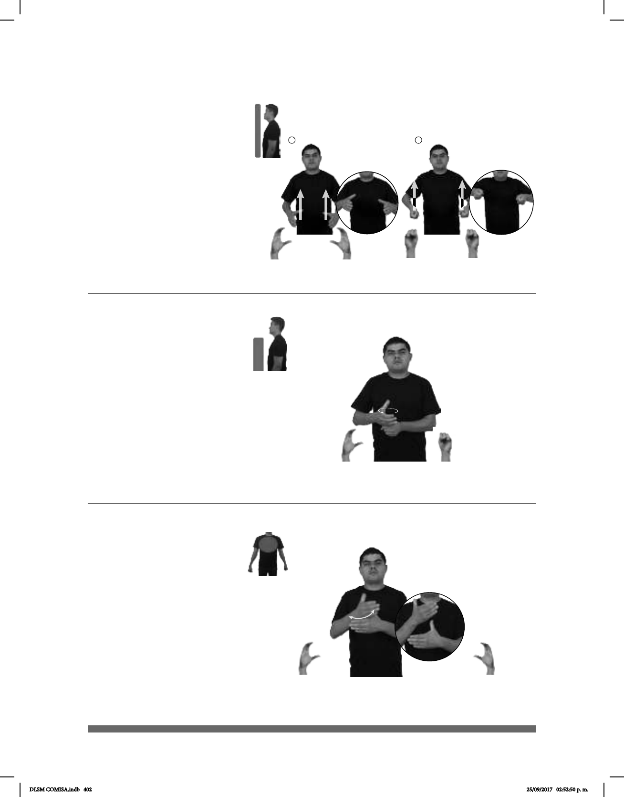

402
1 2
Seña: SS
Seña que pasa de
C.1 a S.1
De la cintura al pecho.
Palmas hacia el
centro.
Recto mientras los
dedos se cierran contra la palma.
sust. f. Recipiente
metálico, de forma cilíndrica y no
muy alto con asas y tapa utilizado
para cocinar.
(C-19)
CACEROLA
izquierda
PESADA
La cacerola está pesada.
Seña: SB
MD C.1, MB S.1
A la altura del pecho.
MD sobre MB.
MD palma hacia la
izquierda, MB palma hacia la
derecha.
La MD se mueve
formando círculos.
sust. m. Bebida que se
hace por infusión con la semilla tostada
y molida del cafeto.
(C-20)
AYER YA pro-YO COMPRAR CAFÉ CON LECHE
Ayer compré un café con leche.
Seña: SB
MD y MB C.1
MD y MB palmas
hacia adentro.
A la altura del pecho.
MD de la comisura de los dedos al
pulgar de la MB.
La MD se mueve
formando un arco.
adj. y sust. m. Que
tiene el color de las semillas del
cafeto cuando están tostadas.
(C-21)
pos-TUS OJOS HERMOSOS COLOR CAFÉ
Tú tienes unos hermosos ojos color café.
DLSM COMISA.indb 402 25/09/2017 02:52:50 p. m.